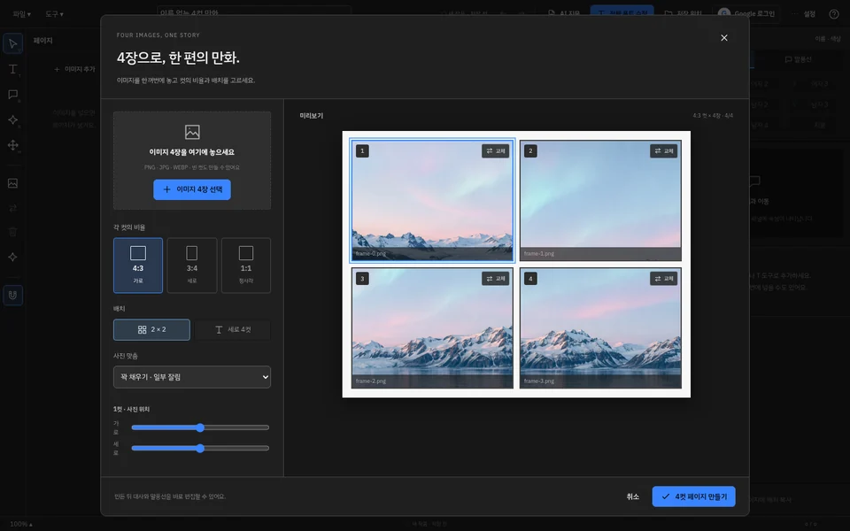

웹디자이너 포트폴리오
생각을 정리하고,
화면으로 만듭니다.
웹디자인 실무에서 발견한 불편을 직접 해결합니다. 정보를 알기 쉽게 설계하고, 필요한 도구를 만들어 실제 사용 경험을 다듬습니다.

Selected work
대표 프로젝트
- 편집
- 저장소
- 시청관
브라우저 확장
BEARSTORY EXT
창작, 보관, 감상을 브라우저 안에서 이어가는 로컬 작업실.
- 견적 확인
- 요청 추적
- 결과 보관
영상 생성 도구
ANIMA VideoAPI
생성 전 견적을 확인하고, 요청한 영상의 상태와 결과를 한곳에서 관리합니다.
- 대화
- 장면 분석
- 이미지
브라우저 확장
Scene Bridge Anima Lite
대화에 담긴 장면을 골라 이미지 생성 요청으로 연결합니다.
Web design practice
정보를 읽는 순서부터
설계합니다.
- 콘텐츠 구성
- 쇼핑몰과 웹콘텐츠 실무에서 전달해야 할 정보의 순서와 읽기 흐름을 정리했습니다.
- UI 설계
- 편집기와 확장 도구에서 반복하는 작업을 살펴보고 기능과 화면을 구성합니다.
- 구현과 개선
- 직접 동작하는 화면을 만들고 실제로 쓰면서 발견한 불편을 다듬습니다.
Design case study
ANIMA Bridge
프롬프트 작성, 생성 설정, 결과 정리까지. 이미지 생성 작업의 흐름을 하나의 확장 프로그램에 담았습니다.
케이스 스터디 보기
Artwork
AI 작품 갤러리
ANIMA로 만든 작품을 모았습니다. 앨범별로 둘러보거나 모델·시드·프롬프트로 찾아볼 수 있습니다.
Contact